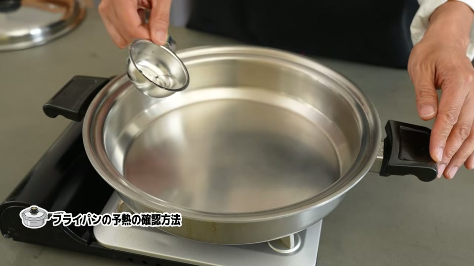
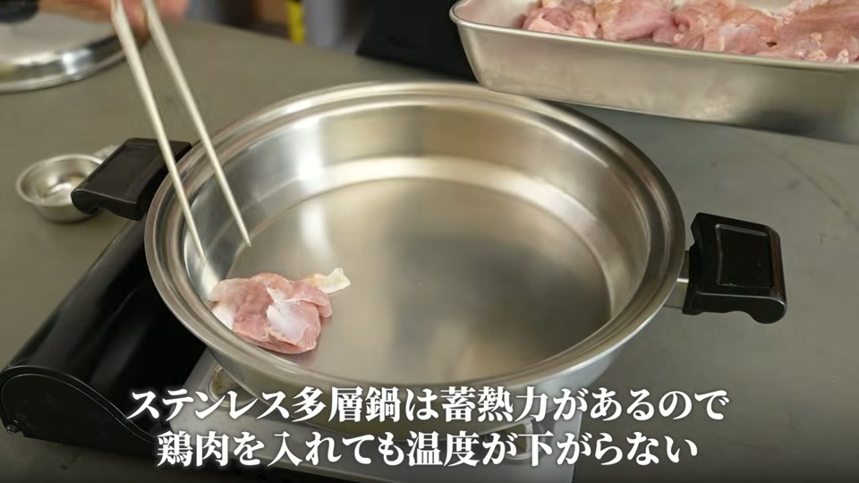
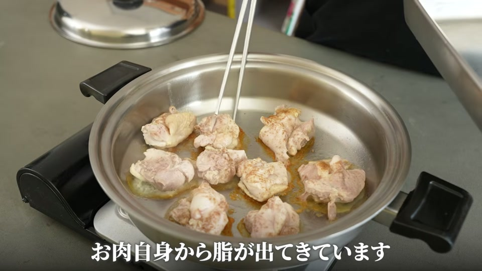
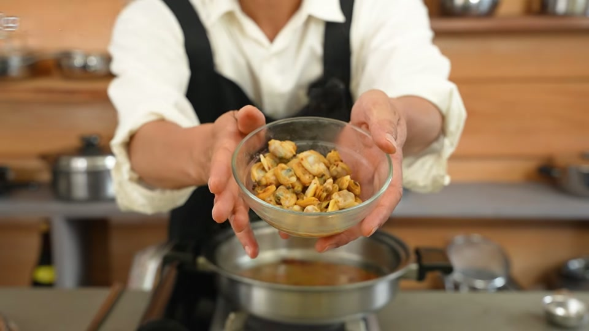
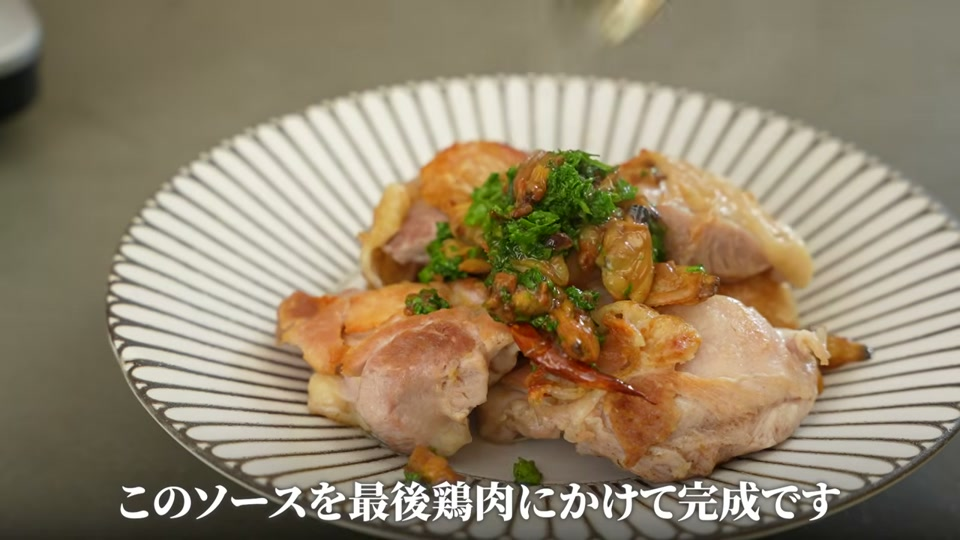
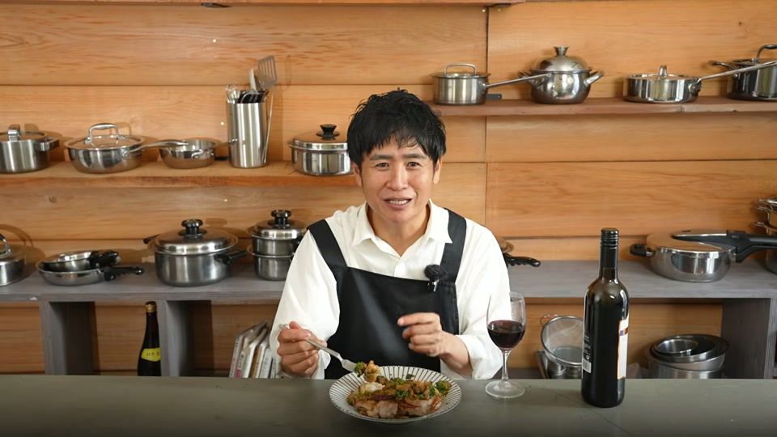

「ステンレスフライパンでお肉を焼くとくっついてしまう」「皮がパリッと焼けない」とお悩みではありませんか？
結論から言うと、ステンレスフライパンはお肉を入れる前にしっかり中火で予熱し、水滴がコロコロと弾ける状態にすることで、油やお肉が一切くっつかなくなります。
この記事では、ステンレスフライパンの正しい予熱テクニックと、フライパン1つで簡単に作れる「鶏もも肉とあさりの酒蒸し」のレシピをご紹介します。
鶏もも肉とあさりの酒蒸しの材料

フライパン1つで手軽に作れる、ワインやお酒のおつまみにもぴったりな一品です。
| 材料 | 分量 |
|---|---|
| 鶏もも肉 | 1枚 |
| あさり（冷凍可） | 70g |
| ニンニク | 3片 |
| 酒 | 100ml |
| オリーブオイル | 大さじ2 |
| 塩・コショウ | 適量 |
絶対くっつかない！ステンレスフライパンの「予熱」と焼き方のコツ

ステンレスフライパンでお肉をくっつけずに焼くための重要なポイントは「予熱」と「焼き方」です。
1. 水滴チェックによる正しい予熱
フライパンを中火で約5分間しっかりと温めます。フライパンに水滴を数滴落とした際、水が蒸発せずにコロコロと玉のように弾けて転がる状態になれば、予熱完了のサインです。
2. 焼く直前に塩コショウをする
鶏肉に塩を振って時間を置くと水分が出てきてしまうため、塩コショウはフライパンに入れる直前に行いましょう。
3. ひっくり返さず「片面焼き」にする
皮目を下にしてフライパンに置いたら、蓋をせず、途中で触ったり裏返したりせずに我慢して焼きます。ステンレス鍋の高い蓄熱性により、皮目から出た油でカリッと香ばしく焼き上がり、ポロっと剥がれるようになります。
鶏肉とあさりの酒蒸しの作り方ステップ

1. 予熱と鶏肉の片面焼き（皮パリパリの秘訣）
- ステンレスフライパンを中火で約5分温め、水滴がコロコロ転がる状態まで予熱します。
- オリーブオイル（大さじ2）をひき、直前に塩コショウをした鶏もも肉を皮目から入れます。
- 蓋をせず、ひっくり返さずにじっくりと焼き、皮目を黄金色にパリッと仕上げます。
- 焼き上がったら鶏肉を一旦取り出します。
2. にんにくとあさりの絶品ソース作り
- 鶏肉を焼いたフライパンの油と旨味はそのまま残し、弱火にします。
- スライスしたニンニク（3片分）を加えて軽く炒めます。
- あさり（70g）と酒（100ml）を加え、蓋をして酒蒸しにします。
- あさりの口が開いたらソースの完成です。取り出しておいた鶏肉にたっぷりと回しかけて召し上がれ。
美味しさ倍増！旨味成分（イノシン酸×グルタミン酸）の組み合わせ

このレシピが圧倒的に美味しい理由は、食材の旨味成分の組み合わせにあります。
- 鶏肉：イノシン酸が豊富
- あさり：グルタミン酸・ハッカク酸が豊富
お肉の「イノシン酸」と貝類の「グルタミン酸」が合わさることで旨味の相乗効果が生まれ、フライパン1つで驚くほど深い味わいのソースに仕上がります。
余ったソースで作る！パスタアレンジの提案

鶏肉とあさりの旨味が凝縮されたソースが残ったら、捨てるのは勿体ありません。
フライパンに残ったソースに少量の水とパスタ（乾麺）を直接投入して煮込むだけで、旨味をすべて吸い込んだ絶品あさりパスタが完成します。お食事の締めにぜひ試してみてください。
動画で紹介されているアイテム・サービス

動画内で使用・紹介されている商品およびサービスです。
- キッチンクラフト Lスキレット（26cmのステンレスフライパン）
- 大澤チャンネル オリジナル商品サイト（ステンレス菜箸、鍋磨き用ブラシなど）
- ヘンケルス オールステンレス包丁
- 安全な浄水器「Re」
- 国産置き型浄水器 beaq
- 酵素玄米炊飯器
ステンレス鍋に関するよくある質問（FAQ）
Q. ステンレスフライパンでお肉がくっついてしまう原因は？
A. 主な原因は予熱不足です。中火で約5分間しっかり温め、水を落とした時に水滴がコロコロと弾ける状態になってから油とお肉を入れることで、くっつきを防ぐことができます。
Q. あさりは生のものを使う必要がありますか？
A. 冷凍のあさりでも十分に美味しく作れます。砂抜き不要の冷凍あさりを使えば、手軽に調理できます。
Q. 鶏肉を焼くときにひっくり返さなくても火が通りますか？
A. ステンレス鍋は蓄熱性と保温性が非常に高いため、皮目を下にして蓋をせずじっくり片面焼きするだけで熱が通り、皮はパリッと、身はジューシーに仕上がります。
まとめ
ステンレスフライパンは、正しい予熱手順（水滴チェック）を行うことで、お肉をくっつけずに皮パリパリに焼くことができます。
鶏肉のイノシン酸にあさりのグルタミン酸を掛け合わせた酒蒸しは、簡単でありながら本格的な味わいを楽しめるレシピです。ぜひご家庭のステンレスフライパンで試してみてください！